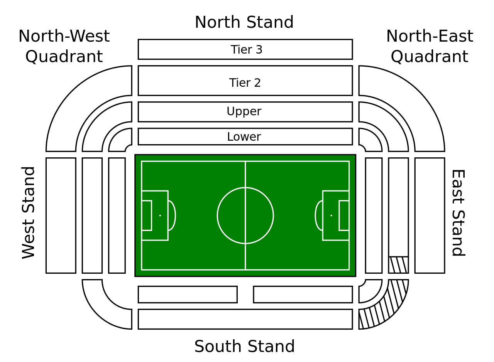
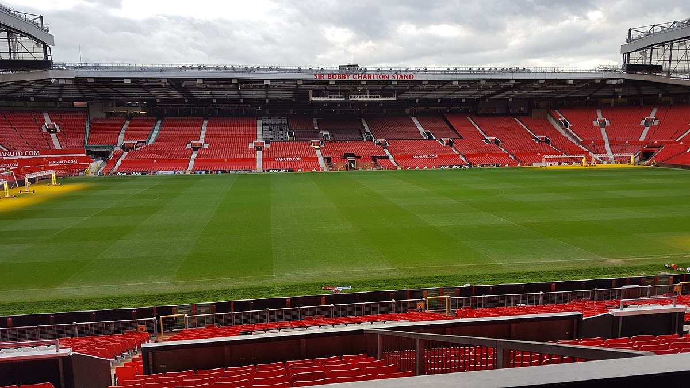

Thiết kế nguyên thủy của Old Trafford bao gồm một khán đài ngồi có mái che, và ba mặt khán đài đứng lộ thiên.
Ba mặt lộ thiên này sau đó đều được lắp đặt thêm mái bằng, với những hàng cột chống đỡ bên dưới...
Những hàng cột dĩ nhiên gây trở ngại cho tầm nhìn của người hâm mộ, do vậy mà trong thập niên 1960,
người ta thay thế hệ thống mái che cũ bằng những tấm mái chìa không cần đến cột trụ.
Song song với việc nâng cấp thường xuyên, sức chứa của Old Trafford cũng dần được thu nhỏ lại,
từ thập niên 1960 trở đi thì chỉ còn có 58 000 chỗ. Sang đến đầu thập niên 1990,
sân lại phải trải qua một đợt tái thiết, dỡ bỏ hoàn toàn những khu khán đài đứng,
và thay vào đó khán đài ngồi, ngõ hầu đáp ứng các tiêu chuẩn về an toàn cầu trường của Liên đoàn Bóng đá Anh.
Sau lần tái thiết ấy, sức chứa của sân bị rút xuống còn có… 44 000 chỗ, quá ít với một đội bóng tầm cỡ như Man Utd.
Nhận rõ sự bất cập, Ban lãnh đạo Câu lạc bộ quyết định mở rộng Old Trafford vào năm 1995
với việc xây mới khu khán đài ba tầng phía Bắc, tăng tổng sức chứa lên 56 000. T
ân khán đài phía Bắc, với kinh phí xây dựng 19 triệu bảng, có chiều cao 200 feet,
và sở hữu 1 giàn mái chìa lớn nhất toàn châu Âu. Viện bảo tàng Manchester United, phòng truyền thống, khu nhà hàng Red Café,
và những khán phòng đặc biệt dành cho các VIP cũng tọa lạc nơi khán đài mới này.
Ngày 06 tháng 11 năm 2011, kỷ niệm 25 năm Ngài Alex Ferguson dẫn dắt Man Utd,
khán đài Bắc đã được đổi tên thành Khán đài Sir Alex Ferguson (Sir Alex Ferguson Stand)
để ghi nhận những công lao của ông đối với lịch sử Câu lạc bộ.

Tuy thế, khán đài phía Nam mới là trung tâm của Old Trafford, với khu vực dành cho ban huấn luyện,
phòng kiểm soát an ninh, khu tác nghiệp truyền hình, cũng như các văn phòng quản trị và vài nhà hàng sang trọng.
Điểm đặc biệt của khán đài phía Nam là hơi dốc, do đó mà có phần thấp hơn ba khán đài còn lại.
Đường hầm dành cho cầu thủ trước kia cũng từng nằm ở trung tâm khán đài Nam,
nhưng đến năm 1993 thì được chuyển sang nằm ở góc Tây Nam, cùng với phòng chờ và phòng thay quần áo.
Đường hầm cũ vẫn còn, nhưng bỏ không, chỉ mở cửa mỗi khi có khách tham quan, hay nhân một dịp đặc biệt nào đó.
Khán đài phía Đông ngoài những chỗ ngồi thông thường, còn có khu dành riêng
cho cổ động viên đội khách nằm ở góc Đông - Nam, và khu dành cho người khuyết tật ở kế cận.
Tên gọi trước đây của khán đài này là Hậu Đài - Bảng Gôn, vì bảng tỷ số được đặt ở đấy.
Về sau, bảng tỷ số này được thay thế bằng hai bảng điện tử gắn tại hai góc khán đài Bắc.
Tháng Một năm 2000, khán đài Đông được xây thêm lên 1 tầng, góp thêm 3000 chỗ vào tổng sức chứa của Old Trafford.
Mặt tiền khán đài Đông trông như một cao ốc văn phòng, với những bức tường và cửa đều làm bằng kính tráng thiếc,
phía trước là tượng đài ngài Matt Busby, bảng đồng tưởng niệm thảm họa Munich,
cùng với chiếc đồng hồ nối tiếng ghi nhớ thời khắc định mệnh ngày 6 tháng 2 năm 1958.
Cửa hàng kinh doanh đồ lưu niệm United cũng nằm trong khu này.
Khán đài phía Tây, tức hậu đài Stretford, là chỗ tụ hội của các fan hâm mộ cuồng nhiệt nhất.
Trước kia, nơi đây là khu khán đài đứng với 20 000 fan "to mồm"
(người ta đã từng đo đạc và phát hiện ra rằng: tiếng ồn do các fan Stretford
gây nên còn dữ dội hơn cả âm thanh gầm rít phát ra khi 1 chiếc phi cơ phản lực cất cánh).
Sau năm 1993, Stretford được cải tạo thành khán đài ngồi, và đến tháng 8 năm 2000 thì được xây thêm tầng hai.
Tại hội trường bên trong tầng hai này, có tượng đài của siêu sao vang bóng 1 thời Denis Law,
người mang biệt danh "ông vua của Stretford".

Sau khi tầng hai của khán đài Tây hoàn tất, sức chứa của Old Trafford là 68 217 chỗ.
Sau đó, CLB tiếp tục mở rộng 2 góc Tây Bắc và Đông Bắc, để nâng sức chứa lên đến 75 000.
Về lâu về dài, ban lãnh đạo United còn dự tính xây mới khán đài Nam với kiến trúc tương tự như khán đài Bắc,
nhằm tăng sức chứa lên con số khổng lồ là 92 000 chỗ.
Ngày 29 tháng 05 năm 2008, để kỷ niệm 40 năm lần đầu tiên Manchester United đạt danh hiệu Cúp châu Âu,
một bức tượng của ba ngôi sao đó là George Best, Denis Law và Bobby Charlton; mang tên "The United Trinity",
đã được công bố bên con đường Sir Matt Busby Way nhìn từ hướng Đông, trực tiếp đối diện với bức tượng của Busby.
